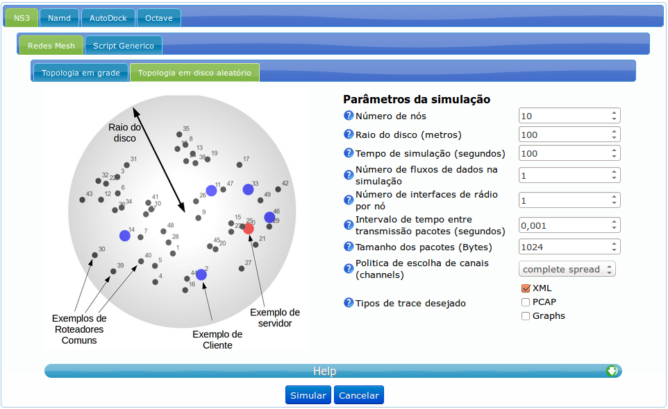

User manual for the A2C portals
Introduction
This tool is designed to users of the computation resources available at CENAPAD-UFC. With these portals an user can execute e-Science applications on the available computation resources using this web interface.
To access the computation resources without this interface, the user must be familiar with the command line interfaces available in clusters and virtual machines, technologies like SSH, Linux shell and SLURM commands.
Through this interfaces we expect that researchers will not need special training to use the resources available at CENAPAD-UFC. The time that initially would be used for special training can be used in the desired research, which is the objective.
Users need to request credentials to access this tool, these credentials need to be requested to CENAPAD-UFC. The login screen requests a user and a password to be present at the user database.
After the successful login the user is redirected to the main portal page, where he has access to all applications from the application tabs.
Instantiating executions
For the user to run applications on the available resources he needs to provide a definition of the desired run with any required file. The portal will decide and communicate with each resource to run in the best possible way without the need for user intervention.
4 applications are currently available in the portals:- Computer networks simulations with NS3
- Simulations of molecular dynamics with NAMD
- Simulations of molecular docking with AutoDock
- Execution of MatLab-like scripts with octave
To select which application will be run, the user must select the correct tab from the application tabs, as shown in the image below:
There may be more specific portal tabs grouped under the main tab for each application, like show in the image below.
In this example, the user can simulate a specific type of network without the need to study the simulator and prepare any simulation code.
The next sections will explain how to use the applications with this interface.Important
The user is expected to already know how to use the applications in a common environment, the objective of this manual is to teach how to use these application in this environment, not to teach how to use these applications.
It is recommended that the user visit the original web site for the desired application if guides or tutorials are needed.
The computer networks simulator, NS3
The NS3 simulator is a open source C++ framework. With this simulator, researchers can create scripts that simulate real computer networks. The entities of this framework allows studies of behavior and performance of computer network entities like protocols and devices. More information on the framework can be found here
Currently the portal support the simulation of wireless mesh networks and allows the submission of script code that runs on the default framework.
The following tabs are used to run wireless mesh simulations:
Grid mesh networks 
Disc mesh networks
The user simply needs to choose the characteristics of the simulated network using the input fields to the right of the picture. There is no necessity of the user learning to code with the NS3 framework.
To submit a C++ code to be run by the portal, the user submits in the following tab:
User script submission
Command line parameters can be passed to the script using the text input under the file input
Go back topThe simulator for molecule dynamics, NAMD

The NAMD simulator allows the study of iterations between molecules which allows research for medicine for example. More information on NAMD can be found here
The user must input the PDB, PSF and INP/XPLOR files as input for the simulation. These files can be created with different tools

Executions can be run from the nothing or start from another execution. To start a execution from another the user must provide the COOR and VEL files created at the end of a NAMD simulation and the step number to start counting iterations.

The 'split simulation' tab equally divides the 'run' parameter of the simulation into the number of 'splits' the user desires, this way the log files will be smaller lowering the problems with the program that is used to analyze this.
The parameters of the CONF file used for simulation parameters can be customized using the combobox under the file inputs, the user simply select which ones he wants to customize and a new input will appear.
The simulator for molecule docking, AutoDock
This simulator allows the study of molecule and ligant docking, more informations can be found here
Each required file for the simulation must be provided in the specific file input as labeled at the left side of the input.
Go back topThe mathematical interpreter, Octave

Octave is a interpreter for Linux that executes a programming language that is designed to look like the mathematical language MatLab that is used for scientific computing. More information can be found here
The user must write the main code for the execution, any other file necessary for the execution, like software libraries and data files, can be submitted in the other file input.
The user can input execution parameters using the text field available at the portal.
Go back topManipulating executions
After a execution is initiated, it will be available at the table at bottom of the screen. The user can use this table to take different actions like check status, download files and dispose of the execution.
Verifying each execution status
The second column (left to right) indicates if the execution is finished or not, finished executions display a green v symbol and unfinished executions display a spinning black and white circle. The third column display the application of that execution.
The symbol with 2 green arrows at the top of the executions table is responsible to update the status of the executions the user can click on it to force a update on the table. The arrows spinning indicates that the portal is currently updating the table, the portal will automatically update the table.
Go back top
Download execution files and results
To download the files generated by each execution the user must click on the icon on the fifth column (left to right) of the line of that execution, the button with the downward arrow and a box. That will generate a zip file that contains all files from that execution.
Go back top
Dispose of executions
If the user wants to dispose of any execution the user must click on the red x icon on the last column to the right of the line of that execution. This can be done to cancel a running execution.
Go back top